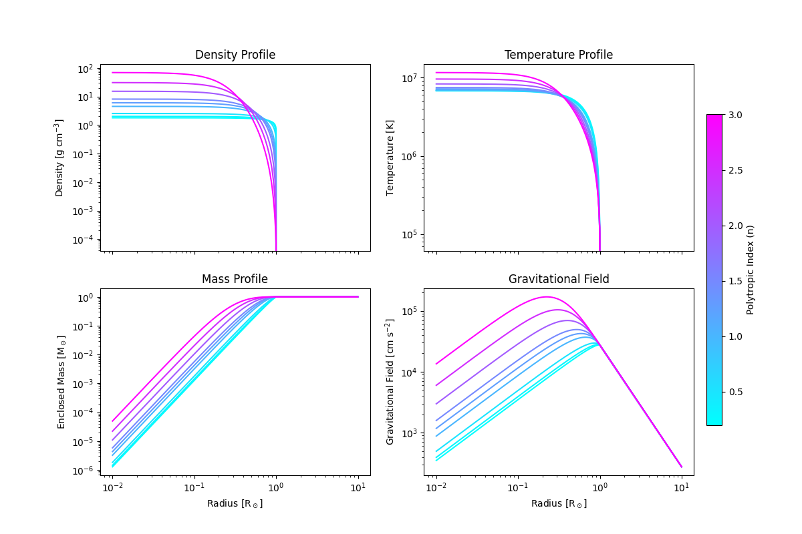

Note
Go to the end to download the full example code.
Polytropic Stellar Structure#
This example shows how to use the PolytropicStarModel
to generate the internal structure of a star governed by a polytropic equation of state.
We demonstrate two ways to construct a model:
From the total mass and radius of the star.
From the central density and central temperature of the core.
The resulting model outputs physical profiles for density, pressure, temperature, gravitational potential, and mass.
import tempfile
import matplotlib.pyplot as plt
Imports#
import numpy as np
from unyt import unyt_quantity
from pisces.models.stars.polytropes import PolytropicStarModel
# Create a temp directory.
tmpdir = tempfile.TemporaryDirectory()
Generate a Polytropic Star from Mass and Radius#
Here we create a model for a star with 1 solar mass and 1 solar radius, assuming a polytropic index n = 1.5 (typical for fully convective stars).
mass = unyt_quantity(1, "Msun")
radius = unyt_quantity(1, "Rsun")
n_index = [0.2, 0.3, 0.5, 1, 1.25, 1.5, 2, 2.5, 3]
models = []
for n in n_index:
filename = f"{tmpdir.name}/polytrope_example_{n}.h5"
models.append(
PolytropicStarModel.from_mass_and_radius(
filename=filename,
mass=mass,
radius=radius,
polytropic_index=n,
overwrite=True,
rmax=unyt_quantity(10, "Rsun"),
rmin=unyt_quantity(0.01, "Rsun"),
)
)
Preparing metadata...: 0%| | 0/7 [00:00<?, ?it/s]
Generating grid...: 14%|█▍ | 1/7 [00:00<00:00, 87381.33it/s]
Computing model constants...: 29%|██▊ | 2/7 [00:00<00:00, 2236.37it/s]
Solving Lame-Emden Eq...: 43%|████▎ | 3/7 [00:00<00:00, 156.18it/s] /home/runner/work/Pisces/Pisces/pisces/math_utils/integration.py:237: RuntimeWarning: invalid value encountered in scalar power
dpsi_dxi = -(theta**n) * xi**2
Computing fields...: 57%|█████▋ | 4/7 [00:00<00:00, 167.94it/s]
Computing gravitational potential...: 71%|███████▏ | 5/7 [00:00<00:00, 98.81it/s]
Computing gravitational potential...: 86%|████████▌ | 6/7 [00:01<00:00, 5.29it/s]
Finalizing model...: 86%|████████▌ | 6/7 [00:01<00:00, 5.29it/s]
Preparing metadata...: 0%| | 0/7 [00:00<?, ?it/s]
Generating grid...: 14%|█▍ | 1/7 [00:00<00:00, 123361.88it/s]
Computing model constants...: 29%|██▊ | 2/7 [00:00<00:00, 2222.74it/s]
Solving Lame-Emden Eq...: 43%|████▎ | 3/7 [00:00<00:00, 149.62it/s]
Computing fields...: 57%|█████▋ | 4/7 [00:00<00:00, 165.27it/s]
Computing gravitational potential...: 71%|███████▏ | 5/7 [00:00<00:00, 118.76it/s]
Computing gravitational potential...: 86%|████████▌ | 6/7 [00:01<00:00, 5.28it/s]
Finalizing model...: 86%|████████▌ | 6/7 [00:01<00:00, 5.28it/s]
Preparing metadata...: 0%| | 0/7 [00:00<?, ?it/s]
Generating grid...: 14%|█▍ | 1/7 [00:00<00:00, 127100.12it/s]
Computing model constants...: 29%|██▊ | 2/7 [00:00<00:00, 2366.32it/s]
Solving Lame-Emden Eq...: 43%|████▎ | 3/7 [00:00<00:00, 233.34it/s]
Computing fields...: 57%|█████▋ | 4/7 [00:00<00:00, 232.76it/s]
Computing gravitational potential...: 71%|███████▏ | 5/7 [00:00<00:00, 192.73it/s]
Computing gravitational potential...: 86%|████████▌ | 6/7 [00:01<00:00, 5.72it/s]
Finalizing model...: 86%|████████▌ | 6/7 [00:01<00:00, 5.72it/s]
Preparing metadata...: 0%| | 0/7 [00:00<?, ?it/s]
Generating grid...: 14%|█▍ | 1/7 [00:00<00:00, 135300.13it/s]
Computing model constants...: 29%|██▊ | 2/7 [00:00<00:00, 2413.99it/s]
Solving Lame-Emden Eq...: 43%|████▎ | 3/7 [00:00<00:00, 237.29it/s]
Computing fields...: 57%|█████▋ | 4/7 [00:00<00:00, 231.67it/s]
Computing gravitational potential...: 71%|███████▏ | 5/7 [00:00<00:00, 229.33it/s]
Computing gravitational potential...: 86%|████████▌ | 6/7 [00:00<00:00, 25.12it/s]
Finalizing model...: 86%|████████▌ | 6/7 [00:00<00:00, 25.12it/s]
Preparing metadata...: 0%| | 0/7 [00:00<?, ?it/s]
Generating grid...: 14%|█▍ | 1/7 [00:00<00:00, 135300.13it/s]
Computing model constants...: 29%|██▊ | 2/7 [00:00<00:00, 2461.45it/s]
Solving Lame-Emden Eq...: 43%|████▎ | 3/7 [00:00<00:00, 159.50it/s]
Computing fields...: 57%|█████▋ | 4/7 [00:00<00:00, 167.72it/s]
Computing gravitational potential...: 71%|███████▏ | 5/7 [00:00<00:00, 138.03it/s]
Computing gravitational potential...: 86%|████████▌ | 6/7 [00:00<00:00, 8.64it/s]
Finalizing model...: 86%|████████▌ | 6/7 [00:00<00:00, 8.64it/s]
Preparing metadata...: 0%| | 0/7 [00:00<?, ?it/s]
Generating grid...: 14%|█▍ | 1/7 [00:00<00:00, 135300.13it/s]
Computing model constants...: 29%|██▊ | 2/7 [00:00<00:00, 2439.26it/s]
Solving Lame-Emden Eq...: 43%|████▎ | 3/7 [00:00<00:00, 212.97it/s]
Computing fields...: 57%|█████▋ | 4/7 [00:00<00:00, 205.71it/s]
Computing gravitational potential...: 71%|███████▏ | 5/7 [00:00<00:00, 190.13it/s]
Computing gravitational potential...: 86%|████████▌ | 6/7 [00:00<00:00, 11.23it/s]
Finalizing model...: 86%|████████▌ | 6/7 [00:00<00:00, 11.23it/s]
Preparing metadata...: 0%| | 0/7 [00:00<?, ?it/s]
Generating grid...: 14%|█▍ | 1/7 [00:00<00:00, 119837.26it/s]
Computing model constants...: 29%|██▊ | 2/7 [00:00<00:00, 2097.15it/s]
Solving Lame-Emden Eq...: 43%|████▎ | 3/7 [00:00<00:00, 171.11it/s]
Computing fields...: 57%|█████▋ | 4/7 [00:00<00:00, 169.45it/s]
Computing gravitational potential...: 71%|███████▏ | 5/7 [00:00<00:00, 146.72it/s]
Computing gravitational potential...: 86%|████████▌ | 6/7 [00:00<00:00, 23.46it/s]
Finalizing model...: 86%|████████▌ | 6/7 [00:00<00:00, 23.46it/s]
Preparing metadata...: 0%| | 0/7 [00:00<?, ?it/s]
Generating grid...: 14%|█▍ | 1/7 [00:00<00:00, 107546.26it/s]
Computing model constants...: 29%|██▊ | 2/7 [00:00<00:00, 2396.75it/s]
Solving Lame-Emden Eq...: 43%|████▎ | 3/7 [00:00<00:00, 168.12it/s]
Computing fields...: 57%|█████▋ | 4/7 [00:00<00:00, 160.96it/s]
Computing gravitational potential...: 71%|███████▏ | 5/7 [00:00<00:00, 132.42it/s]
Computing gravitational potential...: 86%|████████▌ | 6/7 [00:00<00:00, 20.18it/s]
Finalizing model...: 86%|████████▌ | 6/7 [00:00<00:00, 20.18it/s]
Preparing metadata...: 0%| | 0/7 [00:00<?, ?it/s]
Generating grid...: 14%|█▍ | 1/7 [00:00<00:00, 135300.13it/s]
Computing model constants...: 29%|██▊ | 2/7 [00:00<00:00, 2351.07it/s]
Solving Lame-Emden Eq...: 43%|████▎ | 3/7 [00:00<00:00, 244.71it/s]
Computing fields...: 57%|█████▋ | 4/7 [00:00<00:00, 191.53it/s]
Computing gravitational potential...: 71%|███████▏ | 5/7 [00:00<00:00, 196.04it/s]
Computing gravitational potential...: 86%|████████▌ | 6/7 [00:00<00:00, 17.30it/s]
Finalizing model...: 86%|████████▌ | 6/7 [00:00<00:00, 17.30it/s]
Visualize the Stellar Structure#
We now plot four key physical fields as a function of radius: density, temperature, pressure, and gravitational field.
fig, axs = plt.subplots(2, 2, figsize=(12, 8), sharex=True)
cmap = plt.cm.cool
norm = plt.Normalize(vmin=min(n_index), vmax=max(n_index))
for model, n in zip(models, n_index):
# Scale n down to 0-1 for color.
color = cmap(norm(n))
# Add the plots.
axs[0, 0].plot(model.grid["r"].to("Rsun").value, model["density"].to("g/cm**3").value, color=color)
axs[0, 1].plot(model.grid["r"].to("Rsun").value, model["temperature"].to("K").value, color=color)
axs[1, 0].plot(model.grid["r"].to("Rsun").value, model["mass"].to("Msun").value, color=color)
axs[1, 1].plot(model.grid["r"].to("Rsun").value, model["gravitational_field"].to("cm/s**2").value, color=color)
# Scales
for ax in axs.ravel():
ax.set_xscale("log")
ax.set_yscale("log")
# Axis labels
axs[0, 0].set_ylabel(r"Density [${\rm g\;cm^{-3}}$]")
axs[0, 1].set_ylabel(r"Temperature [${\rm K}$]")
axs[1, 0].set_ylabel(r"Enclosed Mass [${\rm M_\odot}$]")
axs[1, 1].set_ylabel(r"Gravitational Field [${\rm cm\;s^{-2}}$]")
for ax in axs[1]:
ax.set_xlabel(r"Radius [${\rm R_\odot}$]")
# Titles
axs[0, 0].set_title("Density Profile")
axs[0, 1].set_title("Temperature Profile")
axs[1, 0].set_title("Mass Profile")
axs[1, 1].set_title("Gravitational Field")
# Add colorbar for polytropic index
sm = plt.cm.ScalarMappable(cmap=cmap, norm=norm)
cbar = fig.colorbar(sm, ax=axs, orientation="vertical", fraction=0.025, pad=0.02)
cbar.set_label("Polytropic Index (n)")
plt.show()

Total running time of the script: (0 minutes 7.341 seconds)